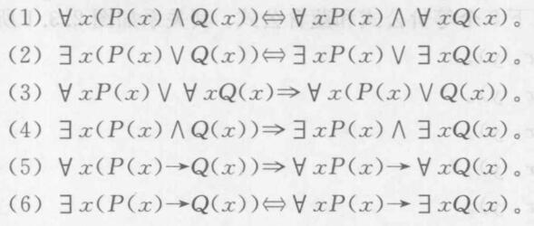
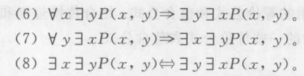
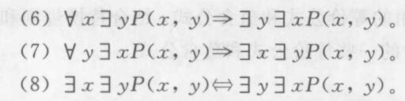

命题逻辑
联结词
- 否定联结词
| \(P\) | \(\neg P\) |
|---|---|
| 0 | 1 |
| 1 | 0 |
- 合取联结词
| \(P\) | \(Q\) | \(P\wedge V\) |
|---|---|---|
| 0 | 0 | 0 |
| 0 | 1 | 0 |
| 1 | 0 | 0 |
| 1 | 1 | 1 |
- 析取联结词
| \(P\) | \(Q\) | \(P\vee V\) |
|---|---|---|
| 0 | 0 | 0 |
| 0 | 1 | 1 |
| 1 | 0 | 1 |
| 1 | 1 | 1 |
- 条件联结词
| \(P\) | \(Q\) | \(P\to V\) |
|---|---|---|
| 0 | 0 | 1 |
| 0 | 1 | 1 |
| 1 | 0 | 0 |
| 1 | 1 | 1 |
- 双条件联结词
| \(P\) | \(Q\) | \(P\leftrightarrow V\) |
|---|---|---|
| 0 | 0 | 1 |
| 0 | 1 | 0 |
| 1 | 0 | 0 |
| 1 | 1 | 1 |
联结词的运算优先级
从高到低依次为，否定、合取、析取、条件、双条件
命题公式
一些定义
定义1，命题变元与常元
用于代表取值为真\((T、1)\)或假\((F、0)\)之一的变量，称为命题变元，通常用大写字母或带下标或上标的大写字母表示，如\(P、Q、R、P_1、P_2\)等。将\(T\)和\(F\)称为命题常元。
通常把由命题常元、命题变元、联结词以及括弧组成的式子称为表达式,但是只有按照特定组合规则所形成的表达式才有实际意义。
定义2，命题公式
命题合式公式(简称命题公式):
(1)(基础)单个命题常元或命题变元是命题合式公式
(2)(归纳)如果A和B是命题公式,则\(\neg A\)、\((A\wedge B)\)、\((A\vee B)\)、\((A\to B)\)、\((A\leftrightarrow B)\)是命题合式公式。
(3)(极小性)只有有限次地应用条款(1)和(2)生成的表达式オ是命题合式公式
定义3，子公式
若\(B\)是命题公式\(A\)的一个连续段且\(B\)也是命题公式,则称\(B\)是\(A\)的个子公式。
命题公式的赋值
对于有\(n\)个变元的公式，有\(2^n\)种不同赋值。
永真式（重言式）
一个命题公式在任何赋值下，其真值都为\(T\)，则称这个公式为永真式（重言式）
永假式（矛盾式）
一个命题公式在任何赋值下，其真值都为\(F\)，则称这个公式为永假式（矛盾式）
偶然式
既不是永真式也不是永假式，则为偶然式
可满足式
一个命题公式至少有一个赋值，使其真值为\(T\)，则称这个公式为可满足式。也即永真式和偶然式都是可满足式。不是可满足式的称为矛盾式。
逻辑等价与蕴含
等价
定义
给定两个命题公式\(A\)和\(B4\),设\(P_1,P_2,\cdots,P_n\)为所有出现在A和B中的命题变元，但\(P_i\)不一定在\(A\)和\(B\)中同时出现，若对于\(P_1,P_2,\cdots,P_n\)的任一赋值,\(A\)和\(B\)的真值都相同，则称\(A\)和\(B\)逻辑等价，记做\(A\Leftrightarrow B\),读做“\(A\)等价于\(B\)”。
下面列出常见的命题等价公式


几个定理
定理1（代入规则）
设\(A\)、\(B\)是命题公式，其中\(A\)是重言式，\(P\)是\(A\)中的命题变元，如果将\(A\)中每一处出现的P均用B代入，则所得命题公式\(A\)仍然是一个重言式
定理2
设\(A\)、\(B\)是命题公式，则\(A\)和\(B\)逻辑等价,当且仅当\(A\leftrightarrow B\)是一个重言式。
定理3（替换规则）
设\(A\)、\(X\)、\(Y\)是命题公式，\(X\)是\(A\)的子公式,且有\(X\Leftrightarrow Y\)。如果将\(A\)中的\(X\)用\(Y\)来替换(不必每一处都替换)，则所得到的公式\(B\)与\(A\)等价,即\(B\Leftrightarrow A\)。
定理4（传递规则）
设\(A\)、\(B\)、\(C\)是命题公式，若\(A\Leftrightarrow B\)且\(B\Leftrightarrow C\),则有\(A\Leftrightarrow C\)。
蕴含
设\(A\)、\(B\)是命题公式，如果\(A\to B\)是一个重言式,则称\(A\)蕴含\(B\),记做\(A\Rightarrow B\)。
一些常见的蕴含公式


证明蕴含式\(A\Rightarrow B\)的一些方法：
- 肯定前件法。假设\(A\)为\(T\)，如果能够推出\(B\)为\(T\)，则有\(A\Rightarrow B\)
- 否定后件法。假设\(B\)为\(F\)，如果能够推出\(A\)为\(F\)，则有\(A\Rightarrow B\)
几个定理
定理1
设\(A\)和\(B\)是任意两个命题公式，\(A\Leftrightarrow B\)当且仅当\(A\Rightarrow B\)且\(B\Rightarrow A\).
几个性质
性质1
设\(A\)、\(B\)是命题公式，如果\(A\Rightarrow B\)且\(A\)是重言式，则\(B\)也是重言式
性质2
蕴含关系是传递的，即\(A\Rightarrow B\)且\(B\Rightarrow C\)，则\(A\Rightarrow C\).
性质3
如果\(A\Rightarrow B\)且\(A\Rightarrow C\)，则\(A\Rightarrow B\wedge C\)
性质4
如果\(A\Rightarrow C\)且\(B\Rightarrow C\)，则\(A\vee B\Rightarrow C\)
对偶式
定义
设有命题公式\(A\)，其中仅含有联结词\(\neg,\vee,\wedge\)，如果将\(A\)中的\(\vee\)替换为\(\wedge\)，\(\wedge\)替换为\(\vee\)，常元\(T,F\)也互相替换，所得到的公式记为\(A^*\)，则称\(A^*\)为\(A\)的对偶式。
显然有，\(A\)也是\(A^*\)的对偶式，并且\((A^*)^*=A\)
几个定理
定理1
设\(A\)和\(A^*\)是对偶公式，其中仅含有联结词\(\neg,\vee,\wedge\)；\(P_1,P_2,\cdots,P_n\)是出现在\(A\)和\(A^*\)中的所有命题变元，于是有
\[ \neg A(P_1,P_2,\cdots,P_n)\Leftrightarrow A^*(\neg P_1,\neg P_2,\cdots,\neg P_n) \]
\[ A(\neg P_1,\neg P_2,\cdots,\neg P_n)\Leftrightarrow\neg A^*(P_1,P_2,\cdots,P_n) \]
定理2
设\(A,B\)是命题公式，则有
- 如果\(A\Leftrightarrow B\)，则\(A^*\Leftrightarrow B^*\)
- 如果\(A\Rightarrow B\)，则\(B^*\Rightarrow A^*\)
范式
析取范式和合取范式
析取式
仅由若干命题变元和若干命题变元之否定通过联结词\(\vee\)构成的命题公式。
合取式
仅由若干命题变元和若干命题变元之否定通过联结词\(\wedge\)构成的命题公式。
析取范式
一个命题公式被称为析取范式，当且仅当它具有如下形式
\[ A_1\vee A_2\vee\cdots\vee A_n \]
其中\(A_1,A_2,\cdots,A_n\)是合取式。
合取范式
一个命题公式被称为合取范式，当且仅当它具有如下形式
\[ A_1\wedge A_2\wedge\cdots\wedge A_n \]
其中\(A_1,A_2,\cdots,A_n\)是析取式。
主析取范式
极小项
一个含\(n\)个命题变元的合取式，如果其中每个变元和其否定不同时存在，但两者之一必须出现且仅出现一次，则称该合取式为极小项。
\(n\)个命题变元\(P_1,P_2,\cdots,P_n\)可构成\(2^n\)个不同的极小项，其形式为：
\[ \tilde{P_1}\wedge \tilde{P_2}\wedge\cdots\wedge \tilde{P_n} \]
其中\(\tilde{P_i}\)或者是\(P_i\)，或者是\(\neg P_i\)
可以用\(n\)位二进制编码表示极小项，例如
\[ m_{010}=\neg P_1\wedge P_2\wedge\neg P_3 \]
有如下三个性质：
- 每一个极小项当其编码与赋值相同时，其真值为\(T\)，在其余\(2^n-1\)种赋值下其真值均为\(F\).
- 任意两个不同的极小项的合取式永假。
- 所有极小项的析取式永真。
主析取范式
设\(P_1,P_2,\cdots,P_n\)是命题公式\(A\)中包含的所有命题变元，若由\(P_1,P_2,\cdots,P_n\)的若干极小项析取所构成的析取范式与\(A\)等价，则称该析取范式是\(A\)的主析取范式。
有如下定理
定理1
在一个命题公式\(A\)的真值表中，使\(A\)的真值为\(T\)的所有赋值所对应的极小项构成的析取范式即为\(A\)的主析取范式。
主合取范式
极大项
一个含\(n\)个命题变元的析取式，如果其中每个变元和其否定不同时存在，但两者之一必须出现且仅出现一次，则称改合取式为极大项。
\(n\)个命题变元\(P_1,P_2,\cdots,P_n\)可构成\(2^n\)个不同的极小项，其形式为：
\[ \tilde{P_1}\vee \tilde{P_2}\vee\cdots\vee \tilde{P_n} \]
其中\(\tilde{P_i}\)或者是\(P_i\)，或者是\(\neg P_i\)
可以用\(n\)位二进制编码表示极大项，例如
\[ M_{101}=\neg P_1\vee P_2\vee\neg P_3 \]
（编码注意与极小项意义相反）
有如下三个性质：
- 每一个极大项当其真值赋值与编码相同时，其真值为\(F\)，在其余\(2^n-1\)种赋值下其真值均为\(T\).
- 任意两个不同的极大项的析取式永真。
- 所有极大项的合取式永假。
主合取范式
设\(P_1,P_2,\cdots,P_n\)是命题公式\(A\)中包含的所有命题变元，若由\(P_1,P_2,\cdots,P_n\)的若干极大项合取所构成的合取范式与\(A\)等价，则称该合取范式是\(A\)的主合取范式。
有如下定理
定理1
在一个命题公式\(A\)的真值表中，使\(A\)的真值为\(F\)的所有赋值所对应的极大项构成的合取范式即为\(A\)的主合取范式。
定理
设\(A\)的主析取范式的各个极小项的下标转为十进制，组成的集合为\(S_1\{i_1,i_2,\cdots,i_k\}\)；主合取范式的各个极大项的下标转为十进制，组成的集合为\(S_2=\{j_1,j_2,\cdots,j_t\}\)，则有
\[ S_1\cap S_2=\phi \]
\[ S_1\cup S_2=\{0,1,2,\cdots,2^n-1\} \]
范式的计算
除了可以用真值表来算，还可以通过德摩根定律等将“\(\to\)”等不是析取、合取、否定的联结词转化，直到只剩析取、合取、否定。再通过添加、删除括号转化为主合取范式或主析取范式。
命题逻辑的推理理论
推理规则
- P规则：在推导过程中，前提可以在任何步骤引入。
- T规则：在推导过程中，如果由已经推出的一个或多个公式蕴含\(S\)，则公式\(S\)可以引入到推导过程中。
证明方法
- 无义证明法。如果能证明\(P\)恒为假，则有\(P\to Q\)恒为真，即\(P\Rightarrow Q\)
- 平凡证明法。如果能证明\(Q\)恒为真，则有\(P\to Q\)恒为真，即\(P\Rightarrow Q\)
- 直接证明法。从一组前提出发，利用公认的推理规则，逻辑演绎得到有效结论。
- 归谬法（即反证法）。
定理
\(H_1,H_2,\cdots,H_m,C\)是公式，如果存在公式\(R\)，使得\(H_1,H_2,\cdots,H_m,\neg C\Rightarrow R\wedge\neg R\)，则有\(H_1,H_2,\cdots,H_m\Rightarrow C\)
- CP规则法。
\(H_1,H_2,\cdots,H_n,R,C\)是命题公式，根据输出律\(E_{22}\)推知
\[ (H_1\wedge H_2\wedge\cdots\wedge H_n)\to(R\to C)\Leftrightarrow(H_1\wedge H_2\wedge\cdots\wedge H_n\wedge R)\to C \]
因此，如果能够证明\(H_1,H_2,\cdots,H_n,R\Rightarrow C\)，则有\(H_1,H_2,\cdots,H_n\Rightarrow R\to C\)
谓词逻辑
谓词和量词
谓词
刻画单个个体的特性或者多个个体间关系的模式称为谓词。
量词
- 全称量词\(\forall\)
- 存在量词\(\exist\)
几个规则
应当使用\(\forall x(H(x)\to D(x))\)，而不能表示为\(\forall x(H(x)\wedge D(x))\)。
应当使用\(\exist x(H(x)\wedge D(x))\)，而不能表示为\(\exist x(H(x)\to D(x))\)。
谓词公式
定义
谓词逻辑的合式公式（简称谓词公式）可由以下步骤生成 1. 原子公式（不出现联结词和量词的单个谓词）是谓词公式。 2. 如果\(A\)和\(B\)是谓词公式，则\(\neg A,(A\wedge B),(A\vee B),(A\to B),(A\leftrightarrow B)\)是谓词公式 3. 如果\(A\)是谓词公式，并且\(A\)中有未被量化的个体变元\(x\)，则\(\forall xA(x)\)和\(\exist xA(x)\)是谓词公式。 4. 只有有限次应用步骤1、2、3所得到的的公式才是谓词公式。
子公式
若\(B\)是谓词公式\(A\)的一个连续段且\(B\)也是谓词公式，则称\(B\)是\(A\)的一个子公式。
辖域
紧跟\(\forall x\)和\(\exist x\)之后的最小的子公式称为该量词的辖域。
约束变元
在\(\forall x\)和\(\exist x\)辖域内\(x\)的一切出现称之为约束出现，这个\(x\)叫做约束变元。
自由变元
个体变元的非约束出现称为自由出现，自由出现的个体变元称为自由变元。
约束变元的换名规则
- 对某个约束变元换名时，需对量词的作用变元以及该量词辖域内所有受该量词约束的约束变元一起换名。
- 换名后的变元符号应是量词辖域内未出现的符号，最好是整个公式中未出现的符号。
谓词验算的永真公式
谓词公式的赋值
定义1
对于一个谓词公式，若给它指定一个个体域\(E\)，再给所有谓词符均指派出确定的关系(具体的特性或关系)，给所有命题变元指派出确定命题(或者指定\(T\)或\(F\))，并为所有自由变元（注意不包含约束变元）分别指派\(E\)上确定的个体，则称为对谓词公式的一个赋值(指派或结识)。谓词公式经过赋值之后就变成了具有确定真值的命题。
定义2
设\(A\)是谓词公式，如果对于特定论域\(E\)上的任何赋值，\(A\)的真值都为真，则称谓词公式\(A\)在\(E\)上永真;如果对于特定论域\(E\)上的任何赋值，\(A\)的真值都为假，则称谓词公式\(A\)在\(E\)上永假;若特定论域\(E\)上存在一种赋值，使得\(A\)的真值都为真，则称谓词公式\(A\)在\(E\)上可满足。
定义3
设\(A\)是谓词公式，如果对于任何赋值，\(A\)的真值都为真，则称谓词公式\(A\)是永真式;如果对于任何赋值，\(A\)的真值都为假，则称谓词公式\(A\)是永假式;若存在一种赋值，使得\(A\)的真值为真，则称谓词公式\(A\)是可满足式。
谓词演算的基本永真式
- 命题逻辑的等价式和蕴含式可在谓词逻辑中推广使用
- 量词的否定律
\[ \neg\forall xP(x)\Leftrightarrow \exist x\neg P(x) \]
\[ \neg\exist xP(x)\Leftrightarrow \forall x\neg P(x) \]
- 量词辖域的扩张与收缩律

- 量词的分配律
 
- 多重量词律
 

- 其他
\(\forall xP(x)\Rightarrow P(y)\)，\(y\)是论域中的任一确定个体。
\(P(y)\Rightarrow\exist xP(x)\)，\(y\)是论域中的某个确定个体。
\(\forall xP(x)\Rightarrow\exist xP(x)\)
谓词逻辑的推理理论
- 存在指定原则（ES）
\[ \frac{\exist xP(x)}{\therefore P(a)} \]
\(a\)是个体常元，注意所指定的个体常元要使得谓词为真。
- 全称指定原则（US）
\[ \frac{\forall xP(x)}{\therefore P(y)} \]
\(y\)是自由变元，也可以指定到个体常元\(a\)
\[ \frac{\forall xP(x)}{\therefore P(a)} \]
注意如果同时指定\(\exist xP(x)\)和\(\forall xQ(x)\)，应当先指定\(P(a)\)，再指定\(Q(a)\)，才能保证两者都为真。
- 存在推广原则（EG）
\[ \frac{P(a)}{\therefore\exist xP(x) } \]
- 全称推广原则（UG）
\[ \frac{\Gamma\Rightarrow P(x)}{\therefore\Gamma\Rightarrow\forall xP(x)} \]
\(\Gamma\)是已知公理和前提的合取，\(\Gamma\)中没有自由变元\(x\)的出现。
集合
集合的表示方法
- 列举法
- 描述法：用自然语言或谓词描述集合中元素的共同特征。
- 归纳定义法（见后）
集合间的关系
外延性公理
两个集合\(A,B\)相等，记为\(A=B\)，当且仅当它们有相同的元素，即
\[ A=B\Leftrightarrow \forall x(x\in A\leftrightarrow x\in B) \]
两个集合不相等，通常记为\(A\neq B\)
子集
设\(A、B\)是任意的两个集合，若集合\(A\)的每个元素都是集合\(B\)的元素，则称\(A\)为\(B\)的子集或称\(B\)包含\(A\),记为\(A\subseteq B\)或\(B\supseteq A\)，用逻辑公式表示为
\[ A\subseteq B\Leftrightarrow\forall x(x\in A\to x\in B) \]
如果\(A\)不是\(B\)的子集，通常记为\(A\nsubseteq B\)
真子集
如果集合\(A\)的每一个元素都属于\(B\)，但集合\(B\)中至少有一个元素不属于\(A\)，则称\(A\)为\(B\)的真子集，记为\(A\subset B\)，用逻辑公式表示为
\[ A\subset B\Leftrightarrow\forall x(x\in A\to x\in B)\wedge \exist y(y\in B\wedge y\notin A)\Leftrightarrow(A\subseteq B)\wedge(A\neq B) \]
全集
在一定范围内所有事物组成的集合称为该范围内的全集记为\(U\)，用逻辑公式表示为
\[ U = \{x|P(x)\vee\neg P(x)\} \]
其中，\(P(x)\)是任意的谓词
空集
不含任何元素的集合称为空集，记为\(\phi\)，用逻辑公式表示为
\[ \phi = \{x|P(x)\wedge\neg P(x)\} \]
其中，\(P(x)\)是任意的谓词，并且显然有\(|\phi|=0\)
几个定理
定理1
空集是任一集合的子集，并且是任何非空集合的真子集。
定理2
设\(A,B,C\)是集合，若\(A\subseteq B\)且\(B\subseteq C\)，则\(A\subseteq C\)。
定理3
集合\(A,B\)相等的充要条件是\(A,B\)互为子集。
定理3.1
对于任何集合\(A\)，有\(A\subseteq A\)
定理4
空集是唯一的。
集合的运算
集合的交，交集
\[ A\cap B = \{x|x\in A\wedge x\in B\} \]
集合的并，并集
\[ A\cup B = \{x|x\in A\vee x\in B\} \]
集合的差，相对补集
\[ A-B=\{x|x\in A\wedge x\notin B\} \]
集合的补，绝对补集
\[ \bar{A}=U-A=\{x|x\in U\wedge x\notin A\} \]
集合的对称差
\[ A\oplus B=(A-B)\cup(B-A)=\{x|(x\in A\wedge x\notin B)\vee(x\in B\wedge x\notin A)\} \]
集合的环积
\[ A\otimes B=\overline{A\oplus B}=(A\cap B)\cup(\bar{A}\cap\bar{B})=\{x|(x\in A\wedge x\in B)\vee(x\notin A\wedge x\notin B)\} \]
满足如下运算律

幂集
给定集合\(A\)，由\(A\)所有子集为元素构成的集合，称为\(A\)的幂集，记作\(\rho(A)\)。若\(|A|=n\)，则有\(|\rho(A)=2^n|\)
容斥原理
定理1
设\(A_1,A_2\)是有限集合，其元素个数分别为\(|A_1|,|A_2|\)，则\(|A_1\cup A_2|=|A_1|+|A_2|-|A_1\cap A_2|\)
容斥原理
将上式推广，得
\[ |A_1\cup A_2\cup\cdots\cup A_n|=\sum_{i=1}^n|A_i|-\sum_{1\leq i<j\leq n}|A_i\cap A_j|+\\ \sum_{1\leq i<j<k\leq n}|A_i\cap A_j\cap A_k|-\cdots+(-1)^{n+1}|A_1\cap A_2\cap\cdots\cap A_n| \]
归纳证明
集合的归纳定义
- 基础条款：指出某些事物属于\(S\)，其功能是给集合\(S\)指定初始元素使其不为空。
- 归纳条款：指出由集合\(S\)中的已有元素构造新元素的办法。
- 极小性条款：断言一个事物除非能有限次应用基础条款和归纳条款构成，否则它不在集合\(S\)中。
归纳法证明
- 基础步骤。对于基础条款中的指定的每个初始元素\(t\)，证明命题\(P(t)\)为真。
- 归纳步骤。证明如果事物\(x,y,\cdots\)有\(P\)性质，那么用归纳条款指定的方法组合它们所得的新元素也具有性质\(P\)
数学归纳法
第一原理
- （归纳基础）证明\(P(0)\)为真（可以用任何办法）
- （归纳假设）任取\(n(n\ge0)\)，假设\(P(n)\)为真。
- （归纳推理）由\(P(n)\)为真，推出\(P(n+1)\)也为真。
第二原理
- （归纳基础）证明\(P(0)\)为真（可以用任何办法）
- （归纳假设）假设对任意的\(n<k\)，均有\(P(k)\)为真。
- （归纳推理）证明\(P(n)\)也为真。
集合的笛卡尔积
序偶
两个元素\(a\)和\(b\)组成的具有固定次序的序列称为序偶或二元组，记为\(<a,b>\)。对于序偶\(<a,b>\)，\(a\)称为第\(1\)元素，\(b\)称为第\(2\)元素。
序偶的相等
两个序偶\(<a,b>\)和\(<c,d>\)相等，记为\(<a,b>=<c,d>\)，当且仅当\(a=c\)且\(b=d\)。
笛卡尔积（叉积）
\[ A\times B=\{<a,b>|a\in A,b\in B\} \]
对于多个集合，有
\[ A_1\times A_2\times\cdots\times A_n=\{<a_1,a_2, \cdots,a_n>|a_i\in A_i,1\leq i\leq n\} \]
其中\(A\times A\times\cdots\times A\)（\(n\)个）可以记作\(A^n\)
规定\(<a_1,a_2, \cdots,a_n>=<<a_1,a_2, \cdots,a_{n-1}>,a_n>\)，而不等于\(<a_1,<a_2, \cdots,a_n>>\)等等其他序偶。
关于笛卡尔积有如下定理
定理1
- \(A\times(B\cup C)=(A\times B)\cup(A\times C)\)
- \(A\times(B\cap C)=(A\times B)\cap(A\times C)\)
- \((A\cup B)\times C=(A\times C)\cup(B\times C)\)
- \((A\cap B)\times C=(A\times C)\cap(B\times C)\)
定理2
如果\(A_i(i=1,2,\cdots,n)\)都是有限集合，那么
\[ |A_1\times A_2\times\cdots\times A_n|=|A_1|\cdot|A_2|\cdot\cdots\cdot|A_n| \]
二元关系
关系的定义
两个集合\(A\)和\(B\)的笛卡儿积\(A\times B\)的任一子集\(R\),称为集合\(A\)到\(B\)上的二元关系。二元关系\(R\)是由序偶构成的集合，若\(<x,y>\in R\)，则称\(x\)与\(y\)有\(R\)关系，也记为\(xRy\);否则,\(<x,y>\notin R\)，称\(x\)与\(y\)没有\(R\)关系，也记为\(x\cancel{R}y\)。
设\(R\)是集合\(A\)到\(B\)的二元关系。集合\(A\)称为\(R\)的前域，集合\(B\)称为\(R\)的陪域。集合\(\{x|(\exist y)(<x,y>\in R)\}\)称为\(R\)的定义域，记为\(domR\)。集合\(\{y|(\exist x)(<x,y>)\in R)\}\)称为\(R\)的值域，记为\(ranR\)。显然, \(domR\subseteq A\)和\(ranR\subseteq B\)。
关系的表示
- 关系矩阵
\[ r_{ij}= \left\{\begin{matrix} 1, if<a_i,b_j>\in R\\ 0, if<a_i,b_j>\notin R \end{matrix}\right. \]
- 关系图

关系的运算
所有集合的运算对于二元关系同样适用。
复合运算
设\(R\)为集合\(A\)到\(B\)的二元关系，\(S\)为\(B\)到\(C\)的二元关系，令
\[ R\circ S=\{<a,c>|a\in A\wedge c\in C\wedge(\exist b)(b\in B\wedge<a,b>\in R\wedge <b,c>\in S)\} \]
称\(R\circ S\)为\(R\)与\(S\)的复合关系。
复合运算可以通过关系的矩阵的运算来实现
\[ \bm{M}_{R\circ S}=\bm{M}_R\odot\bm{M}_S \]
其中\(\odot\)是布尔乘法运算，\(c_{ij}=\bigvee_{k=1}^{n}(a_{ik}\wedge b_{kj})\)
复合运算有如下定理
定理1
\((R\circ S)\circ T=R\circ(S\circ T)\)
关系的逆，逆关系
\[ R^{-1}=\{<b,a>|<a,b>\in R\} \]
关系矩阵即为原矩阵的转置
关系图即将箭头反向
有如下定理
定理1
- \((R^{-1})^{-1}=R\)
- \((R_1\cup R_2)^{-1}=R_1^{-1}\cup R_2^{-1}\)
- \((R_1\cap R_2)^{-1}=R_1^{-1}\cap R_2^{-1}\)
- \((\overline{R})^{-1}=\overline{R^{-1}}\)，其中\(\overline{R}=(A\times B)-R\)，\(\overline{R^{-1}}=(B\times A)-R^{-1}\)。
- \((R_1-R_2)^{-1}=R_1^{-1}-R_2^{-1}\)
定理2
\[ (R\circ S)^{-1}=S^{-1}\circ R^{-1} \]
集合上的二元关系及其特性
集合上的二元关系
集合\(A\)与\(A\)的笛卡尔积\(A\times A\)的子集称为\(A\)上的二元关系。
相等关系
\[ I_A=\{<a,a>|a\in A\} \]
\(R\)的幂次
设\(R\)是\(A\)上的二元关系，\(n\in Z^+\)，称\(R\circ R\circ\cdots\circ R\)(n个)为\(R\)的\(n\)次幂。记为\(R^n\)
约定\(R^0=I_A\)
有如下定理
定理1
- \(R^m\circ R^n=R^{m+n}\)
- \((R^m)^n=R^{mn}\)
定理2
设存在\(i,j\in R\)，使得\(R^i=R^j\)，则有
- 对任意\(k\ge 0, R^{i+k}=R^{j+k}\)
- 对任意\(k,m\ge 0, R^{i+md+k}=R^{i+k}\)，其中\(d=j-i\)
- 记\(S=\{R_0,R^1,\cdots,R^{j-1}\}\)，对于任意\(n\in N\)，均有\(R^n\in S\)
二元关系的特性
- 自反性。对于\(A\)中的每个元素\(a\)，都有\(aRa\)，则称\(R\)在\(A\)上是自反的。
- 反自反性。对于\(A\)中的每个元素\(a\)，都有\(a\cancel{R}a\)。空集上的空关系即是自反的也是反自反的。
- 对称性。对于任意\(a,b\in A\)，若有\(aRb\)，则必有\(bRa\)。
- 反对称性。对于任意\(a,b\in A\)，若有\(aRb\)且\(bRa\)，则必有\(a=b\)。若关系图上只有零个或多个自回路，则既是对称的，又是反对称的。
- 传递性。对于任意\(a,b,c\in A\)，若\(aRb,bRc\)则必有\(aRc\)。
关系的闭包运算
设\(R\)是集合\(A\)上的二元关系，如果\(A\)上另外一个二元关系\(R'\)满足： 1. \(R'\)是自反的（对称的，传递的） 2. \(R'\subseteq R\) 3. 对于\(A\)上任何自反的（对称的，传递的）关系\(R''\)，若\(R''\subseteq R\)，有\(R''\subseteq R'\)，则称\(R'\)是\(R\)的自反（对称，传递）闭包，记为\(r(R)(s(R),t(R))\)。
有如下定理
定理1
- \(R\)是自反的当且仅当\(r(R)=R\)
- \(R\)是对称的当且仅当\(s(R)=R\)
- \(R\)是传递的当且仅当\(t(R)=R\)
定理2
- \(r(R)=R\cup I_A\)
- \(s(R)=R\cup R^{-1}\)
- \(t(R)=\bigcup_{i=1}^{\infty}R^i\)
定理3
假设\(|A|=n\)，那么\(t(R)=\bigcup_{i=1}^{n}R^i\)
定理4
- 如果\(R\)是自反的，那么\(s(R),t(R)\)也是自反的。
- 如果\(R\)是对称的，那么\(r(R),t(R)\)也是对称的。
- 如果\(R\)是传递的，那么\(r(R)\)也是传递的。
定理5
- \(sr(R)=rs(R)\)，（\(sr(R)=s(r(R))\)以下运算顺序相同）。
- \(tr(R)=rt(R)\)
- \(ts(R)\subseteq st(R)\)
等价关系
集合的划分
给定非空集合\(A\)和集合簇\(\pi=\{A_1,A_2,\cdots,A_m\}\)，如果
- \(A_i\subseteq A\)且\(A_i\neq\phi\)
- \(A=\bigcup_{i=1}^{m}A_i\)
- \(A_i\cap A_j=\phi, i\neq j\)
那么称\(\pi\)是\(A\)的一个划分，若\(\pi\)满足1.2.则称\(\pi\)是\(A\)的一个覆盖。
等价关系和等价类
等价关系
\(R\)是\(A\)上的二元关系，若\(R\)是自反的、对称的、传递的，则称\(R\)是等价关系。
等价类
设\(R\)是非空集合\(A\)上的等价关系，对于任意\(a\in A\)，称集合\([a]_R=\{x|x\in A,xRa\}\)为\(a\)关于\(R\)的等价类，\(a\)称为等价类\([a]_R\)的代表元素。如果等价类个数有限，则\(R\)的不同等价类的个数叫做\(R\)的秩，否则秩是无限的。
有如下定理
定理1
设\(R\)是非空集合\(A\)上的等价关系，对于\(a,b\in A\)有\(aRb\)，当且仅当\([a]_R=[b]_R\)
商集
设\(R\)是集合\(A\)上的等价关系，由\(R\)确定的所有等价类组成的集合，称为集合\(A\)上关于\(R\)的商集，记为\(A/R\)
\[ A/R = \{[x]_R|x\in A\} \]
有如下定理
定理1
- 任取\(x\in A\)，\([x]_R\neq\phi\)
- 任取\(x,y\in A\)，要么\([x]_R=[y]_R\)，要么\([x]_R\cap[y]_R=\phi\)
- \(\bigcup_{x\in A}[x]_R=A\)
定理2
设\(\pi\)是非空集合\(A\)的一个划分，则\(A\)上的二元关系\(R=\bigcup_{B\in\pi} B\times B\)是\(A\)上的等价关系（称为由划分\(\pi\)诱导的\(A\)上的等价关系）。
定理3
设\(R_1\)和\(R_2\)是非空集合\(A\)上的等价关系，则\(R_1=R_2\Leftrightarrow A/R_1=A/R_2\)
定理4
设\(R\)是非空集合\(A\)上的任意一个等价关系,\(\pi\)是\(A\)的任意一个划分，那么\(R\)诱导出\(\pi\)当且仅当\(\pi\)诱导出\(R\)。即说明等价关系和集合的划分是一一对应的。
序关系
偏序集合的概念与表示
偏序
如果\(A\)上的关系\(R\)是自反的，反对称的和传递的，那么\(R\)是\(A\)上的偏序，通常用符号\(\preceq\)表示，称序偶\(<A,\preceq>\)为偏序集合。通常用\(x\prec y\)表示\(x\preceq y\)且\(x\neq y\)
可比与不可比
在偏序集合\(<A,\preceq>\)中，对于元素\(a,b\in A\)，如果\(a\preceq b\)或者\(b\preceq a\)，那么称\(a\)或\(b\)是可比的，否则不可比的。
盖住
在偏序集合\(<A,\preceq>\)中，对于\(x,y\in A\)，如果\(x\prec y\)且没有其他元素\(z\in A\)满足\(x\prec z\prec y\)，则称\(y\)盖住\(x\)
哈斯图
链
设\(<A,\preceq>\)是一个偏序集合，\(B\subseteq A\)。如果\(B\)中的任意两个元素都是可比的，那么称\(B\)为\(<A，\preceq>\)中的链，\(B\)中元素的个数称为该链的长度。如果\(B\)中的任意两个不同的元素都是不可比的，那么称\(B\)为\(<A，\preceq>\)中的反链。
偏序集合中的特殊元素
极大元
设\(<A，\preceq>\)是偏序集合，且\(B\subseteq A\)。如果\(b\in B\)，且\(B\)中不存在元素\(x\)，使得\(x\neq b\)且\(b\preceq x\)，那么\(b\)称为\(B\)的极大元。
极小元
设\(<A，\preceq>\)是偏序集合，且\(B\subseteq A\)。如果\(b\in B\)，且\(B\)中不存在元素\(x\)，使得\(x\neq b\)且\(x\preceq b\)，那么\(b\)称为\(B\)的极小元。
最大元
设\(<A，\preceq>\)是偏序集合，且\(B\subseteq A\)。如果\(b\in B\)，对于任意元素\(x\in B\)，均有\(x\preceq b\)，那么\(b\)称为\(B\)的最大元。
最小元
设\(<A，\preceq>\)是偏序集合，且\(B\subseteq A\)。如果\(b\in B\)，对于任意元素\(x\in B\)，均有\(b\preceq x\)，那么\(b\)称为\(B\)的最小元。
有如下定理
定理1
设\(<A，\preceq>\)是偏序集合，且\(B\subseteq A\)。如果\(B\)有最大（最小元），那么它是唯一的。
上界
设\(<A，\preceq>\)是偏序集合，且\(B\subseteq A\)。如果\(a\in A\)，对于任意元素\(b\in B\)，均有\(b\preceq a\)，那么\(a\)称为\(B\)的上界。
下界
设\(<A，\preceq>\)是偏序集合，且\(B\subseteq A\)。如果\(a\in A\)，对于任意元素\(b\in B\)，均有\(a\preceq b\)，那么\(a\)称为\(B\)的下界。
最小上界（上确界）
设\(<A，\preceq>\)是偏序集合，且\(B\subseteq A\)。\(a\)为\(B\)的上界，若对\(B\)的任意上界\(a'\)均有\(a\preceq a'\)，则称\(a\)为\(B\)的最小上界或上确界。
最大下界（下确界）
设\(<A，\preceq>\)是偏序集合，且\(B\subseteq A\)。\(a\)为\(B\)的下界，若对\(B\)的任意下界\(a'\)均有\(a'\preceq a\)，则称\(a\)为\(B\)的最大下界或下确界。
有如下定理
定理1
若\(B\)有最小上界（最大下界），那么它是唯一的。
定理2
设\(<A，\preceq>\)是偏序集合，且\(B\subseteq A\)。
- 若\(b\)是\(B\)的最大元，则\(b\)是\(B\)的极大元。
- 若\(b\)是\(B\)的最大元，则\(b\)是\(B\)的最小上界。
- \(b\in B\)，若\(b\)是\(B\)的上界，当且仅当\(b\)是\(B\)的最小上界。
- 若\(b\)是\(B\)的最小元，则\(b\)是\(B\)的极小元。
- 若\(b\)是\(B\)的最小元，则\(b\)是\(B\)的最大下界。
- \(b\in B\)，若\(b\)是\(B\)的下界，当且仅当\(b\)是\(B\)的最大下界。
定理3
设\(<A，\preceq>\)是非空有限偏序集，则\(A\)中必存在极大元和极小元。
定理4
设\(<A，\preceq>\)是偏序集合，如果\(A\)中最长链的长度为\(n\)，则\(A\)中元素能划分为\(n\)个互不相交的反链。
线序和良序
设\(<A，\preceq>\)是偏序集合，如果任取\(a,b\in A\)，都有\(a\preceq b\)或者\(b\preceq a\)，那么称\(\preceq\)为\(A\)上的线序或全序。称\(<A，\preceq>\)为线序集合，称\(A\)为链。
如果\(A\)上的一个二元关系\(R\)是一个线序，且\(A\)的每一非空子集都有最小元，那么称\(R\)为\(A\)上的良序，称\(<A,R>\)为良序集合。
有如下定理
定理
每一有限线序集合都是良序集合。
函数与无限集合
函数的定义
注意对于每个\(x\in A\)，都只和唯一一个\(y\in Y\)有\(f\)关系。\(y\)是\(x\)的函数值或像，\(x\)是\(y\)的原像。
定义域必须是整个前域，值域可以不是整个陪域。一般\(X,Y\)指的是前域和陪域。
函数相等
\(f:A\to B\), \(g:C\to D\)，如果\(A=C,B=D\)，且对于所有的\(x\in A\)有\(f(x)=g(x)\)，则称\(f,g\)相等，记作\(f=g\)
多元函数
前域是\(n\)个集合的笛卡尔积，称为\(n\)元函数，像记作\(f(x_1,x_2,\cdots,x_n)\)
递归定义的函数
前域是归纳定义的集合时，可以采用递归定义方法来定义函数。规则是：用已经得到的元素函数值和给定的函数来计算新元素的函数值。
特殊函数
单射
任取\(x_1,x_2\in X\)，如果\(x_1\neq x_2\)，那么\(f(x_1)\neq f(x_2)\)，则称\(f\)为单射函数，也称一对一函数。
满射
若任取\(y\in Y\)，存在\(x\in X\)，使得\(f(x)=y\)，则称为满射函数。
双射
既是单射又是满射，称为双射函数。也称一一对应函数。
有如下定理
定理1
设\(X,Y\)是有限集合，\(f:X\to Y\)
- 若\(f\)是单射，则必有\(|X|\leq|Y|\)
- 若\(f\)是满射，则必有\(|X|\ge|Y|\)
- 若\(f\)是双射，则必有\(|X|=|Y|\)
定理2
设\(X\)和\(Y\)是有限集合，\(f\)是从集合\(X\)到\(Y\)的函数。若\(|X|=|Y|\)，则\(f\)是单射，当且仅当\(f\)是满射。
常数函数
存在\(c\in Y\)，对任意\(x\in X\),\(f(x)=c\)
恒等函数
\(f(x)=x\)
置换（排列）
对于函数\(f:X\to X\)，若\(f\)是双射的，则称\(f\)为\(X\)上的置换或排列。\(X\)上的恒等函数称为恒等置换或者幺置换。\(|X|=n\)时称为\(n\)次置换，\(|X|\)无限时称为无限次置换。
通常写成
\[ P= \begin{pmatrix} x_1 & x_2 & \cdots & x_n\\ f(x_1) & f(x_2) & \cdots & f(x_n) \end{pmatrix} \]
复合函数和逆函数
类似于关系的复合运算
但是注意书写顺序。\(g\diamond f\)和\(f\circ g\)的顺序正好相反
定理1
\(f:X\to Y,g:Y\to Z\)，那么\(g\diamond f\)是\(X\)到\(Z\)的函数。
定理2
\(h\diamond(g\diamond f)=(h\diamond g)\diamond f\)
- \(f^0=I_x\)
- \(f^{n+1}=f\diamond f^n\)
定理3
\(f:X\to Y,g:Y\to Z\)
- 若\(f,g\)满射，则\(g\diamond f\)满射。
- 若\(f,g\)单射，则\(g\diamond f\)单射。
- 若\(f,g\)双射，则\(g\diamond f\)双射。
- 若\(g\diamond f\)满射，则\(g\)满射
- 若\(g\diamond f\)单射，则\(f\)单射
- 若\(g\diamond f\)双射，则\(g\)满射，\(f\)单射。
逆函数
设\(f\)是双射函数，则\(f^{-1}=\{<y,x>|<x,y>\in f\}\)。显然逆函数也是双射函数。
定理1
- \((f^{-1})^{-1}=f\)
- \(f^{-1}\diamond f=I_X\)
- \(f\diamond f^{-1}=I_X\)
定理2
\((g\diamond f)^{-1}=f^{-1}\diamond g^{-1}\)
可数与不可数集合
集合的基数
基数
度量\(A\)大小的数称为基数或势，记为\(|A|\)。
等势
若\(A\)到\(B\)能建立起双射函数，则称\(A,B\)等势，记为\(A\sim B\)，或\(|A|=|B|\)
定理1
等势是任何集合簇上的等价关系。即是自反的、对称的、传递的。
有限集合、无限集合
含有有限个（包含0）元素的集合称为有限集合，不是有限集合的称为无限集合。
定理1
有限集合的任意子集是有限集合。无限集合的超集是无限集合。
定理2
无限集合存在与其等势的真子集。
可数集
与自然数集\(N\)等势的集合称为可数无限集合，简称可数集。可数集的基数用\(\alef_0\)表示。
有限集和可数集通称为至多可数集。
枚举
设\(A\)是一个集合，如果\(f\)是从\(N\)或从\(N_k=\{0,1,2,\cdots,k-1\}\)到\(A\)的一个满射函数，则称\(f\)为\(A\)的一个枚举。如果\(f\)是双射的，则称为无重复枚举，否则称为重复枚举。
定理1
一个无限集合\(A\)是可数集，当且仅当存在\(A\)的枚举。
定理2
可数无限集的任一无限子集是可数集。
定理3
任意两个可数集的并是可数集。
定理4
\(N\times N\)是可数集。
定理5
可数个可数集的并是可数集。
不可数集
与自然数集不等势的无限集称为不可数集
定理1
实数集的子集\((0,1)\)是不可数集
基数的比较
Zemelo三歧性定理
以下三条恰有一条成立
- |A|<|B|
- |A|>|B|
- |A|=|B|
Cantor-Schroder-Bernstein定理
\(|A|\leq|B|\)且\(|A|\ge|B|\)，则\(|A|=|B|\)
定理3
设\(A\)是任意有限集合，则\(|A|<\alef_0<\alef\)
定理4
任意无限集合必定存在可数无限子集
定理5
\(\alef_0\)是最小的无限集基数
Cantor定理
\(|M|<|\rho (M)|\)
图论
图的基本概念
按边是否有方向，图可以分为有向图、无向图和混合图。
设\(G\)是一个有向图，如果将\(G\)中的每条边的方向去掉就能得到一个无向图\(G'\)，则称\(G'\)为\(G\)的底图。
邻接点
关联于同一条边的两个结点被称为邻接点。
邻接边
关联于一个结点的两条边被称为邻接边。
孤立结点
不与任何结点邻接的结点称之为孤立节点
零图
仅由若干个孤立节点构成的图称为零图。
平凡图
仅由单个孤立节点组成的图称为平凡图。
平行边
\(e_1=e_2=\{u,v\}\)，若\(e_1,e_2\)是两条不同的边，则称\(e_1,e_2\)为平行边。
自回路（环）
\(e=\{u,u\}\)
多重图
有平行边的图。
线图
不含平行边的图。
简单图
不含自回路的图。
结点的度数
与结点\(v\)关联的边数称为结点\(v\)的度数（无向图），记为\(deg(v)\)。
如果是有向图，则以结点\(v\)为终点的边数称为入度\(deg^-(v)\)，为始点的边数称为出度\(deg^+(v)\)。显然有\(deg(v)=deg^-(v)+deg^+(v)\)
有如下定理
握手定理
任何图中，所有节点的度数之和等于边数的两倍。
定理2
任何图中，奇数度的节点必有偶数个。
定理3
任何有向图中，所有节点的入度等于所有节点的出度。
特殊图
无向完全图
无向简单图中，任何两个不同结点间都恰有一条边相连。\(n\)个结点的无向完全图记为\(K^n\)。
有向完全图
有向图\(G=<V,E>\)满足\(E=V\times V\)。记为\(D_n\)。
二部图
非零图，节点集合\(V\)可以划分成两个不相交的子集\(X\)和\(Y\)，使\(G\)中的每一条边的一个端点在\(X\)中而另一个端点在\(Y\)中，则称\(G\)为二部图，记为\(G=<X,E,Y>\)
可以通过标号法确定一个图是不是二部图。
二部图必无自回路，但可以有平行边。
子图与补图
子图
设\(G=<V,E>\)，\(G'=<V',E'>\)，若有\(E'\subseteq E\)且\(V'\subseteq V\)，则称\(G'\)是\(G\)的子图。
生成子图
\(V'=V\)时，\(G'\)是\(G\)的生成子图。
导出子图
设\(G'\)是\(G\)的子图，\(V'\)仅由\(E'\)中边相关联的结点组成，则称\(G'\)为由边集\(E'\)导出的子图。
补图
给定一个图\(G\)，由\(G\)中所有的结点及所有能使\(G\)成为完全图的添加边组成的图，称为\(G\)相对于完全图的补图，简称为\(G\)的补图，记为\(\bar{G}\)。
图的同构
设\(G=<V,E>,G'=<V',E'>\)，如果存在双射函数\(f:V\to V',g:E\to E'\)，对于任何\(e\in E,e=[v_i, v_j]\)当且仅当\(g(e)=[f(v_i),f(v_j)]\)。则称\(G,G'\)同构，记作\(G\cong G'\)。
相互同构的图只是画法不同或者结点与边的命名不同而已。
两幅图同构的必要条件
- 结点数相同
- 边数相同
- 度数相同的结点数目相同
图的连通性
路和回路
通路
经过的结点不重复的路。
迹
经过的边不重复的路。回路为闭迹，非回路为开迹。
圈
除始点和终点外没有相同结点的闭迹称为圈。长度为\(k\)的圈称为\(k\)圈，又可根据\(k\)分为奇圈和偶圈。
定理1
在一个具有\(n\)个节点的图中，如果两个结点连通，则两个结点间必有一条长度小于\(n\)的路（也存在小于\(n\)的通路）。
定理2
在一个具有\(n\)个节点的图中，如果存在闭迹，则必存在一条长度小于等于\(n\)的圈。
定理3
设\(G\)是一个无向图，若\(G\)中每个结点的度数大于等于\(2\)，\(G\)中必含有圈。
定理4
\(G=<V,E>\)是无向图，\(|E|>0\)，\(G\)是二部图当且仅当\(G\)中不含有奇圈。
无向图的连通性
割点与割点集
删除某个结点和其相连边后，图变成不连通的，则称为割点。删除某个点集中的所有点和所连接边，图变成不连通的，并且删除该点集的任意真子集图仍然连通，则称这个点集为割点集。
k连通
由\(G\)产生一个不连通子图最少需要删去\(k\)个结点。则称\(G\)为\(k\)连通图。
定理1
无向图中，一个结点是割点，当且仅当存在两个结点间的每条路都要通过该节点。
割边与割边集
与割点相似。
k边连通
与\(k\)连通相似。
定理1
无向图中，一条边是割边，当且仅当它不包含在任一圈中。
有向图的连通性
强连通，单侧连通，弱连通
强连通则是两个结点双向可达。单侧连通则是单向可达。若联通则是看成无向图。
定理1
有向图是强连通的，当且仅当它存在一条回路，至少包含每个结点一次。
最短路
见算法竞赛模板。
图的矩阵表示
邻接矩阵
\(AA^T\)
\(G\)中刚好有\(b_{ij}\)个结点，从\(v_i\)和\(v_j\)均有边引出到这些节点。
\(A^TA\)
\(G\)中刚好有\(b_{ij}\)个结点，以这些节点为始边，既有边到\(v_i\)又有边到\(v_j\)。
\(A\times A\)
从\(v_i\)到\(v_j\)的路，长度为2的有\(b_{ij}\)条。
同理可知\(A^{(m)}\)的含义。
可达矩阵
\(P(G)=A^{(0)}\vee A^{(1)}\vee\cdots\vee A^{(n-1)}\)
定理
- 无向图是连通图，当且仅当可达矩阵所有元素都为1.
- 有向图是强连通图，当且仅当可达矩阵所有元素都为1.
- 有向图是单侧连通图，当且仅当\(P\vee P^T\)所有元素都为1.
- 有向图是弱连通图，当且仅当以\(A\vee A^T\)作为邻接矩阵求出来的可达矩阵\(P'\)所有元素都为1.
求传递闭包的快速算法
设\(R\)是集合\(V\)上的二元关系，\(n\in \bm{Z}^+\)，对于任意\(a,b\in V,<a,b>\in R^n\)，当且仅当\(R\)的关系图\(G=<V,E>\)中存在从\(a\)到\(b\)有长度为\(n\)的有向路。
设\(\bm{M}_R\)是\(V\)上二元关系\(R\)的关系矩阵，则
\[ \bm{M}_{t(R)}=\bm{M}_R\vee\bm{M}_R^{(2)}\vee\cdots\vee\bm{M}_R^{(n)} \]
欧拉图与汉密尔顿图
欧拉图
欧拉路（欧拉迹）
包含图中所有边的开迹。
欧拉回路
包含图中所有边的闭迹。
欧拉图
包含欧拉回路的图称为欧拉图。
定理1
无向图是欧拉图当且仅当图是连通的并且每个结点的度均为偶数。
无向图中存在一条欧拉路，当且仅当图是联通的，并且图中恰有两个奇数度的点。并且这两个点是起点和终点。
定理2
有向图是欧拉图，当且仅当它是联通的，并且每个结点的出度等于入度。
有向图有欧拉路，当且仅当它是联通的，并且除了两个结点以外都出度等于入度，这两个结点必须一个出度比入度大一，另一个入度比出度大一。
汉密尔顿图
包含图中每个结点一次且仅一次的通路称为汉密尔顿路。包含图中每个结点一次且仅一次的圈叫汉密尔顿回路。含汉密尔顿回路的图叫做汉密尔顿图。
定理1（必要条件）
若\(G\)是汉密尔顿图，则对于结点集\(V\)的每一个非空子集\(S\)都有
\[ \omega(G-S)\leq|S| \]
其中\(\omega(G-S)\)表示\(G\)删除\(S\)中所有结点后得到的连通分支的个数。
定理2（必要条件）
设\(G=<X,E,Y>\)是无向连通二部图，其中\(|X|=m,|Y|=n\)，若\(m\neq n\)，则必不是汉密尔顿图。
若\(|m-n|>1\)，则必不存在汉密尔顿路。
定理3（充分条件）
设\(G=<V,E>\)是含有\(n(n\ge3)\)个节点的简单无向图，如果\(G\)中的任何两个不同结点的度数之和都大于等于\(n-1\)，则\(G\)中存在汉密尔顿路。
如果都大于等于\(n\)，则存在汉密尔顿回路。
平面图
平面嵌入
将一个平面图\(G\)重新排列得到边不相交的图\(G'\)，\(G'\)称为一个平面嵌入。
面的次数
面\(r\)的边界回路长度称为面的次数，记作\(deg(r)\)
定理1
连通平面图，所有面的次数之和等于边数的两倍
定理2
连通平面图，有\(n\)个节点，\(m\)条边，\(r\)个面，则有\(n-m+r=2\)成立。
若\(n\ge3\)，则\(m\leq3n-6\)
若每个面至少由\(k\)边围成，则有\(m\leq\frac{k(n-2)}{k-2}\)
同胚
给定两个图\(G_1\)和\(G_2\)，如果它们本身是同构的，或者通过反复插入度为2的结点(在某边上嵌入结点)或反复删除度为2的结点(仅去除结点,其关联边拼接)后，能够使\(G_1\)和\(G_2\)同构，则称\(G_1\)和\(G_2\)在\(2\)度结点内同构，亦称同胚。
库拉托夫斯基定理
一个图是平面图，当且仅当它不包含与\(K_{3,3}\)和\(K_5\)同胚的子图。
图的着色
图的结点着色
正常着色
无向图，给每个结点指定一种颜色，若满足邻接的两个结点颜色不同，则称为正常着色。
可k-着色
可以用\(k\)种不同的颜色给无向图正常着色。
k色图
对无向图正常着色所需要的最少的颜色数，称为顶着色数，简称色数，记为\(\mathcal{X}(G)\)。色数为\(k\)的图称为\(k\)色图
Welch Powell着色法
- 将图\(G\)中的结点按度数递减的次序进行排列。
- 用一种与已着色结点所着颜色不同的新的颜色\(C\)对排列最前的尚未着色的节点着色，并按排列次序对与前面已着上颜色\(C\)的结点均不相邻的每一结点着同样的颜色\(C\)。
- 重复2知道着色结束。
定理1
任何图均满足\(\mathcal{X}(G)\leq \Delta(G)+1\)。\(\Delta(G)=max\{d(u)|u\in V\}\)
定理2
\(\mathcal{X}(G)=2\)，当且仅当\(G\)是二部图。
平面图的着色
对偶图
设\(G=<V,E>\)是平面图，\(G'\)是\(G\)的一个平面嵌入，\(F(G')\)是\(G'\)的面集合。构造图\(G^*\)，若\(G^*\)的结点集合\(V(G^*)=F(G')\)，且任取两个结点\(f_1,f_2\in V(G^*)\)，\(f_1\)和\(f_2\)之间存在边\(e\)当且仅当\(f_1\)和\(f_2\)在\(G'\)中有一条公共边，则称\(G^*\)是\(G\)的对偶图。
定理
设\(G=<V,E>\)是一个连通简单平面图，且\(|V|\ge 3,|E|=m\)，则\(G\)中必存在结点\(u\in V\)，满足\(deg(u)\leq 5\)。
希伍德五色定理
任何一个连通简单平面图都是5可着色的。
四色定理
平面图的色数不超过4。
树
无向树的定义
平凡树
只有一个孤立节点的树。
定理1
对于一个含有\(n\)个结点\(m\)条边的无向树，以下定义等价
- 无圈且连通
- 无圈且\(m=n-1\)
- 连通且\(m=n-1\)
- 无圈，但任意新增一条边，恰得到一个圈
- 连通，且每条边都是割边
- 每一对结点有且只有一条通路
定理2
任何一颗非平凡树中至少有两片树叶
生成树
定理1
任何一个无向连通图至少有一颗生成树
定理2
连通图中的一个圈与其任何一棵生成树的补至少有一条公共边。
定理3
一个边割集和任何一棵生成树至少有一条公共边。
最小生成树及其算法
见竞赛模板。
根树及其应用
根树
一棵有向树，恰有一个节点入度为0，其余节点入度都为1。
m元树
每个结点的出度均小于等于\(m\)的根树。
每个节点的出度均等于\(0\)或\(m\)的根树称为正则\(m\)元树。
定理1
正则\(m\)元树\(T\)，其树叶数为\(t\)，分支结点数为\(i\)，则有\((m-1)i=t-1\)
带权树
如果一颗二元树\(T\)共有\(n\)片树叶，分别带权\(\omega_1,\omega_2,\cdots,\omega_n\)。定义这棵二元树\(T\)的权值为，
\[ W(T)=\sum_{i=1}^{n}\omega_iL(\omega_i) \]
其中\(L(\omega_i)\)为带权\(\omega_i\)的树叶的深度（根深度为0）。在所有带这些权的二元树中，具有最小权的二元树称为最优二元树。
定理1
最优二元树是一颗正则二元树。
定理2
最优二元树中，层数最大的分支节点的两个儿子所带权分别为最小的两个权。
最优二元树的构造方法
前缀码
给定一个以\(0,1\)组成序列为元素的集合，若没有一个序列是另一个序列的前缀，则该集合称为前缀码。
利用有序正则二元树解决前缀码问题